grad_descent <- function(f, grad, x0, gamma, n) {
# one row per iterate, one column per coordinate
path <- matrix(NA_real_, nrow = n + 1, ncol = length(x0))
path[1, ] <- x0
for (i in 1:n) {
path[i + 1, ] <- path[i, ] - gamma * grad(path[i, ])
}
# return a data frame ready for ggplot: iterates plus the value of f at each
out <- as.data.frame(path)
names(out) <- paste0("x", seq_along(x0))
out$f <- apply(path, 1, f)
out$iter <- 0:n
out
}5 Week 5: Optimisation for Statistics
This is the week where everything pays off. In Chapter 2 we met gradient descent in one dimension, in Chapter 3 we wrapped it into a reusable function, and in Chapter 4 we learnt to draw pictures of what our code is doing. This week we put those tools to work on the problem that underlies an enormous amount of modern statistics:
Fitting a model is minimising a function.
Maximum likelihood, least squares, penalised regression, neural networks: behind each of them sits an optimisation problem, and behind most of the algorithms that solve those problems sits some descendant of gradient descent. By the end of this chapter you will have met the whole family: plain gradient descent, its stochastic cousin, momentum, preconditioning, and the quasi-Newton method BFGS that the built-in optimisers of both languages (R’s optim() and Python’s scipy.optimize.minimize()) use in practice.
5.1 Gradient descent, again
Quick recap. We want to minimise a differentiable function f : \mathbb{R}^d \to \mathbb{R}. The gradient \nabla f(\mathbf{x}) points in the direction of steepest increase, so we repeatedly take a small step the other way:
\mathbf{x}_{n+1} = \mathbf{x}_n - \gamma \, \nabla f(\mathbf{x}_n),
where \gamma > 0 is the step size (machine learning people say learning rate). In Chapter 3 we packaged this into grad_descent(f, grad, x0, gamma, n). Here it is again (chapters are self-contained) with one upgrade: instead of returning only the final point, it records the whole trajectory, because this week we want to watch the algorithm work.
R
Python
import numpy as np
import pandas as pd
def grad_descent(f, grad, x0, gamma, n):
# one row per iterate, one column per coordinate
path = np.full((n + 1, len(x0)), np.nan)
path[0] = x0
for i in range(n):
path[i + 1] = path[i] - gamma * grad(path[i])
# return a data frame ready for plotting: iterates plus the value of f at each
out = pd.DataFrame(path, columns=[f"x{j + 1}" for j in range(len(x0))])
out["f"] = [f(row) for row in path]
out["iter"] = range(n + 1)
return outNote for Python: the R loop runs i = 1, ..., n and fills rows 2, ..., n + 1; the Python loop runs i = 0, ..., n - 1 and fills rows 1, ..., n: the same trajectory, one index base apart (Chapter 1’s indexing note at work).
Note the functional style from Chapter 3: f and grad are arguments. The same dozen lines will minimise a toy parabola now and a logistic regression likelihood later, without changing a character.
Let us try it on a friendly two-dimensional bowl,
f(x_1, x_2) = (x_1 - 1)^2 + 2\,(x_2 + 1)^2, \qquad \nabla f(x_1, x_2) = \begin{pmatrix} 2(x_1 - 1) \\ 4(x_2 + 1) \end{pmatrix},
whose minimum sits at (1, -1).
R
f_bowl <- \(x) (x[1] - 1)^2 + 2 * (x[2] + 1)^2
grad_bowl <- \(x) c(2 * (x[1] - 1), 4 * (x[2] + 1))
path_bowl <- grad_descent(f_bowl, grad_bowl, x0 = c(-2, 2), gamma = 0.1, n = 60)
round(tail(path_bowl, 3), 5) x1 x2 f iter
59 0.99999 -1 0 58
60 0.99999 -1 0 59
61 1.00000 -1 0 60Python
f_bowl = lambda x: (x[0] - 1)**2 + 2 * (x[1] + 1)**2
grad_bowl = lambda x: np.array([2 * (x[0] - 1), 4 * (x[1] + 1)])
path_bowl = grad_descent(f_bowl, grad_bowl, x0=np.array([-2, 2]), gamma=0.1, n=60)
path_bowl.tail(3).round(5) x1 x2 f iter
58 0.99999 -1.0 0.0 58
59 0.99999 -1.0 0.0 59
60 1.00000 -1.0 0.0 60Sixty steps and we are sitting on the minimum. To see the descent we plot the function as a contour plot: evaluate f on a grid (expand.grid() in R, np.meshgrid() in Python), then hand the grid to geom_contour(). Since we will draw many of these, we write two small helper functions (again: Chapter 3 habits paying rent).
Note for Python: plotnine, ggplot2’s Python twin from Chapter 4, has no geom_contour(). Every contour figure this week therefore falls back on matplotlib’s plt.contour() (same pictures, different engine), and the faceted contour figures become plt.subplots() panels.
R
library(ggplot2)
# evaluate f on a grid, ready for geom_contour
contour_data <- function(f, xlim, ylim, n = 100) {
grid <- expand.grid(x1 = seq(xlim[1], xlim[2], length.out = n),
x2 = seq(ylim[1], ylim[2], length.out = n))
grid$f <- apply(grid[, 1:2], 1, f)
grid
}
# grey contours of f, with the trajectory drawn on top
plot_path <- function(f, path, xlim, ylim, bins = 20, colour = "#0072B2") {
ggplot(contour_data(f, xlim, ylim), aes(x1, x2)) +
geom_contour(aes(z = f), bins = bins, colour = "grey70") +
geom_path(data = path, colour = colour, linewidth = 0.4) +
geom_point(data = path, colour = colour, size = 0.9) +
theme_minimal()
}
plot_path(f_bowl, path_bowl, xlim = c(-2.5, 3), ylim = c(-3, 2.5))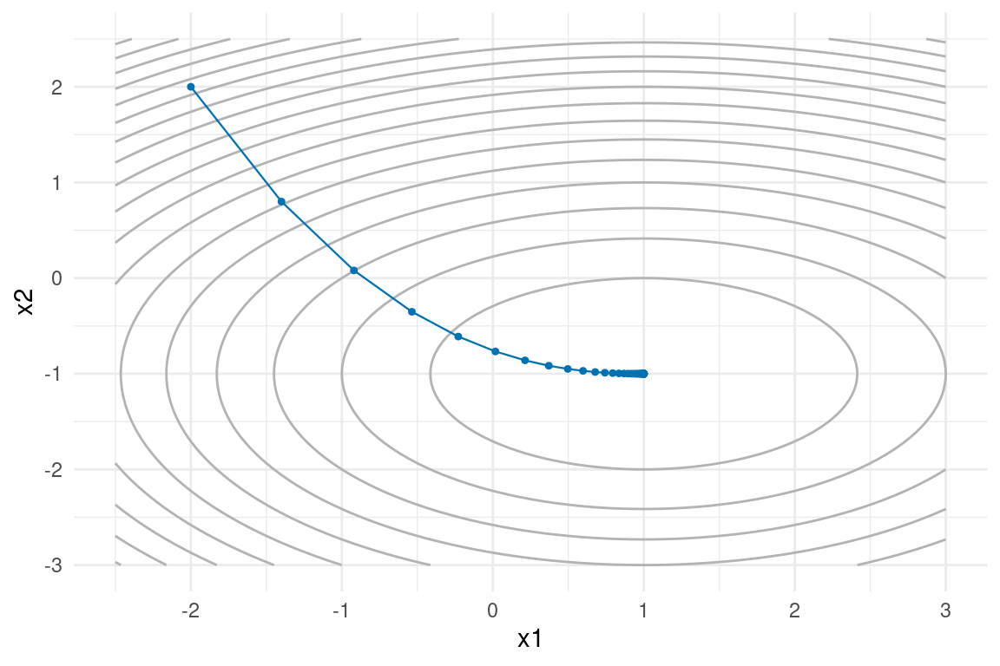
Python
import matplotlib.pyplot as plt
# Unfortunately geom_contour does not work on plotnine!
# There are alternatives using matplotlib.
# evaluate f on a grid, ready for plt.contour
def contour_data(f, xlim, ylim, n=100):
x1, x2 = np.meshgrid(np.linspace(xlim[0], xlim[1], n),
np.linspace(ylim[0], ylim[1], n))
f_grid = np.array([f(np.array([a, b]))
for a, b in zip(x1.ravel(), x2.ravel())])
return x1, x2, f_grid.reshape(x1.shape)
# grey contours of f, with the trajectory drawn on top
def plot_path(f, path, xlim, ylim, bins=20, colour="#0072B2"):
x1, x2, f_grid = contour_data(f, xlim, ylim)
fig, ax = plt.subplots()
ax.contour(x1, x2, f_grid, levels=bins, colors="0.7", linewidths=0.5)
ax.plot(path["x1"], path["x2"], color=colour, linewidth=0.8)
ax.scatter(path["x1"], path["x2"], color=colour, s=8)
ax.set_xlabel("x1")
ax.set_ylabel("x2")
return fig, ax
fig, ax = plot_path(f_bowl, path_bowl, xlim=(-2.5, 3), ylim=(-3, 2.5))
plt.show()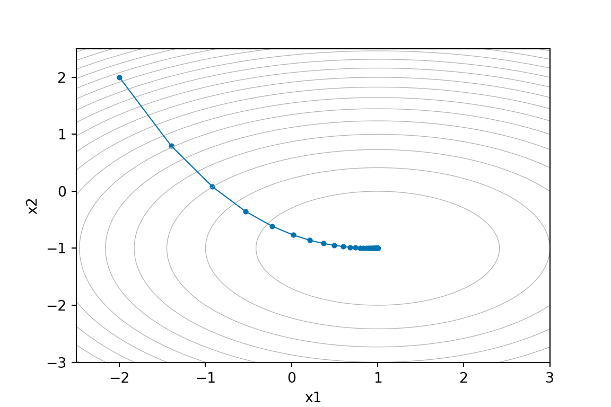
The path marches straight into the bowl. Lovely. Time to break it.
5.2 Why the step size is hard
The step size \gamma is doing a lot of quiet work. To expose it, we use a function that is deliberately ill-conditioned (much steeper in one direction than the other):
f(x_1, x_2) = \frac{x_1^2}{2} + \frac{10\, x_2^2}{2}, \qquad \nabla f(x_1, x_2) = \begin{pmatrix} x_1 \\ 10\,x_2 \end{pmatrix}.
Think of a long narrow valley: gentle along x_1 (curvature 1), steep across it in x_2 (curvature 10). Watch what three different step sizes do, starting from (-9, 1.5).
R
f_ill <- \(x) x[1]^2 / 2 + 10 * x[2]^2 / 2
grad_ill <- \(x) c(x[1], 10 * x[2])
path_small <- grad_descent(f_ill, grad_ill, c(-9, 1.5), gamma = 0.01, n = 60)
path_zig <- grad_descent(f_ill, grad_ill, c(-9, 1.5), gamma = 0.18, n = 60)
path_boom <- grad_descent(f_ill, grad_ill, c(-9, 1.5), gamma = 0.25, n = 8)
# one labelled data frame, one facet per step size (week 4 tricks)
path_small$gamma <- "gamma = 0.01: crawling"
path_zig$gamma <- "gamma = 0.18: zig-zag"
path_boom$gamma <- "gamma = 0.25: boom"
paths3 <- rbind(path_small, path_zig, path_boom)
paths3$gamma <- factor(paths3$gamma, levels = unique(paths3$gamma))
# the contour layer has no `gamma` column, so it is drawn in every facet
ggplot(contour_data(f_ill, c(-10, 3), c(-4, 4)), aes(x1, x2)) +
geom_contour(aes(z = f), bins = 20, colour = "grey70") +
geom_path(data = paths3, colour = "#0072B2", linewidth = 0.4) +
geom_point(data = paths3, colour = "#0072B2", size = 0.9) +
coord_cartesian(ylim = c(-4, 4)) +
facet_wrap(~ gamma) +
theme_minimal()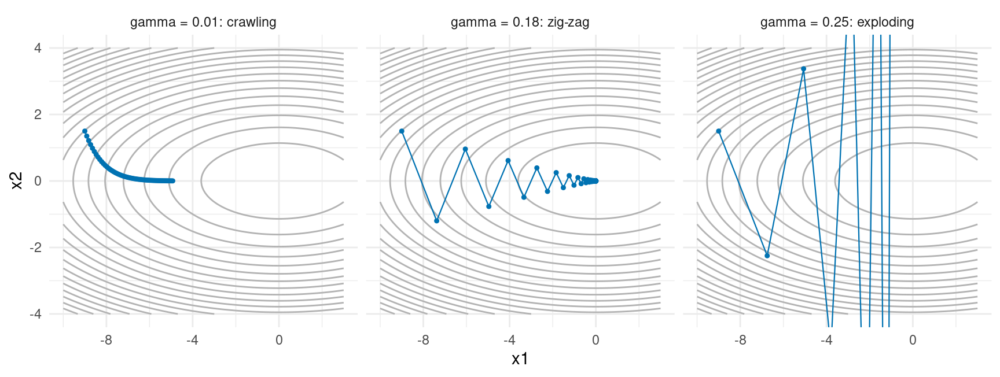
Python
f_ill = lambda x: x[0]**2 / 2 + 10 * x[1]**2 / 2
grad_ill = lambda x: np.array([x[0], 10 * x[1]])
path_small = grad_descent(f_ill, grad_ill, np.array([-9, 1.5]), gamma=0.01, n=60)
path_zig = grad_descent(f_ill, grad_ill, np.array([-9, 1.5]), gamma=0.18, n=60)
path_boom = grad_descent(f_ill, grad_ill, np.array([-9, 1.5]), gamma=0.25, n=8)
# one list of labelled paths, one subplot per step size (no facets in matplotlib)
titles = ["gamma = 0.01: crawling", "gamma = 0.18: zig-zag", "gamma = 0.25: boom"]
paths3 = [path_small, path_zig, path_boom]
# the same contours are drawn in every panel, then one trajectory per panel
x1, x2, f_grid = contour_data(f_ill, (-10, 3), (-4, 4))
fig, axes = plt.subplots(1, 3, figsize=(9, 3.4), sharey=True)
for ax, p, ttl in zip(axes, paths3, titles):
ax.contour(x1, x2, f_grid, levels=20, colors="0.7", linewidths=0.5)
ax.plot(p["x1"], p["x2"], color="#0072B2", linewidth=0.8)
ax.scatter(p["x1"], p["x2"], color="#0072B2", s=8)
ax.set_ylim(-4, 4)
ax.set_title(ttl, fontsize=9)
plt.show()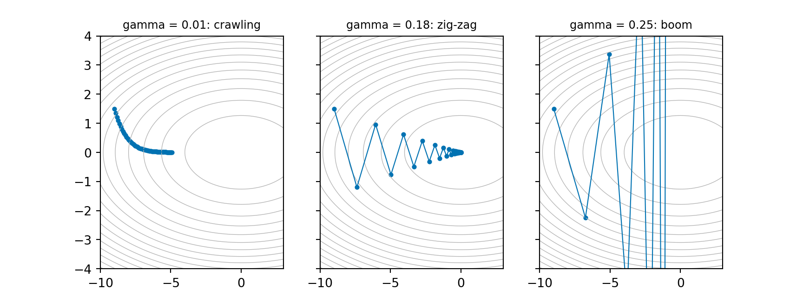
Three step sizes, three personalities:
- Too small (\gamma = 0.01): every step is safe and almost useless. After 60 iterations we have barely moved along the valley.
- Near the limit (\gamma = 0.18): the steep x_2 direction overshoots and bounces from one wall of the valley to the other (the famous zig-zag) while slowly drifting towards the minimum.
- Too big (\gamma = 0.25): each bounce is bigger than the last. The iterates diverge. (The panel is clipped; the true trajectory left the building.)
5.2.1 The condition number
There is a clean piece of intuition behind this. For a quadratic, gradient descent in each coordinate multiplies the error by (1 - \gamma \lambda) per step, where \lambda is the curvature in that direction. (These directional curvatures are exactly the eigenvalues of the Hessian of f: the eigen() from Chapter 1, quietly reappearing as promised.) Stability requires |1 - \gamma \lambda| < 1 for every direction, i.e.
\gamma < \frac{2}{L}, \qquad L = \text{largest curvature},
which for our valley means \gamma < 2/10 = 0.2: exactly why 0.18 scraped through and 0.25 exploded. But progress in the flattest direction is governed by the smallest curvature \mu: per step the error shrinks by (1 - \gamma\mu), at best about (1 - \mu/L). The ratio
\kappa = \frac{L}{\mu} \qquad \text{(the condition number)}
controls how many iterations you need: as \kappa grows, the iteration count grows in proportion. Our valley has \kappa = 10 and is already annoying. Real statistical problems (say a regression with one covariate measured in grams and another in tonnes) can have \kappa in the millions, and plain gradient descent simply stops being a usable tool. Hold that thought; it is the villain for the rest of the chapter.
A small helper we will use to compare methods fairly: how many iterations until we are within tol of the target?
R
steps_to_tol <- function(path, target, tol = 1e-3) {
X <- as.matrix(path[, grep("^x", names(path))])
dist <- sqrt(colSums((t(X) - target)^2))
hit <- which(dist < tol)
if (length(hit) == 0) NA_integer_ else path$iter[hit[1]]
}
c(crawl = steps_to_tol(grad_descent(f_ill, grad_ill, c(-9, 1.5), 0.01, 5000), c(0, 0)),
zig = steps_to_tol(grad_descent(f_ill, grad_ill, c(-9, 1.5), 0.18, 5000), c(0, 0)))crawl zig
906 46 Python
def steps_to_tol(path, target, tol=1e-3):
X = path.filter(regex="^x").to_numpy()
dist = np.sqrt(((X - target)**2).sum(axis=1))
hit = np.nonzero(dist < tol)[0]
return np.nan if len(hit) == 0 else int(path["iter"].iloc[hit[0]])
{"crawl": steps_to_tol(grad_descent(f_ill, grad_ill, np.array([-9, 1.5]), 0.01, 5000),
np.array([0, 0])),
"zig": steps_to_tol(grad_descent(f_ill, grad_ill, np.array([-9, 1.5]), 0.18, 5000),
np.array([0, 0]))}{'crawl': 906, 'zig': 46}
Exercise 5.1: Goldilocks and the step size
Consider f(x_1, x_2) = x_1^2/2 + 25\,x_2^2/2, with gradient \nabla f = (x_1, \, 25 x_2), starting point (-8, 2), and true minimum (0,0).
- Using the stability condition \gamma < 2/L, predict the largest stable step size. Check your prediction by running
grad_descent()with \gamma just below and just above it (a smalln, say 100, is enough to see divergence). - Use
steps_to_tol()to count the iterations needed to get within 10^{-3} of the minimum for \gamma = 0.005, 0.04 and 0.07 (use a generousn, e.g. 20000). What do you conclude about how to choose \gamma?
5.3 Estimation is optimisation
So far f has been a toy. Here is why statisticians care. A huge share of estimators are defined as the minimiser of an average loss over the data:
\hat{\theta} = \arg\min_{\theta} L(\theta), \qquad L(\theta) = \frac{1}{n} \sum_{i=1}^{n} \ell_i(\theta),
where \ell_i(\theta) measures how badly the parameter \theta explains observation i. Two examples will follow us for the rest of the chapter.
Linear regression (mean squared error). With observations (\mathbf{x}_i, y_i) and model y_i \approx \mathbf{x}_i^\top \boldsymbol\beta, take \ell_i(\boldsymbol\beta) = \tfrac{1}{2}(y_i - \mathbf{x}_i^\top \boldsymbol\beta)^2, so
L(\boldsymbol\beta) = \frac{1}{2n} \|\mathbf{y} - X\boldsymbol\beta\|^2, \qquad \nabla L(\boldsymbol\beta) = -\frac{1}{n} X^\top (\mathbf{y} - X\boldsymbol\beta).
(The \tfrac12 is cosmetic: it cancels the 2 from differentiating the square. Minimising L is least squares, which for Gaussian errors is also maximum likelihood.)
Logistic regression (negative log-likelihood). For binary y_i \in \{0, 1\} the model is \Pr(y_i = 1 \mid \mathbf{x}_i) = \sigma(\mathbf{x}_i^\top\boldsymbol\beta) with \sigma(z) = 1/(1 + e^{-z}). Writing out -\log of the likelihood and dividing by n:
L(\boldsymbol\beta) = \frac{1}{n}\sum_{i=1}^n \Big[ \log\!\big(1 + e^{\mathbf{x}_i^\top\boldsymbol\beta}\big) - y_i \, \mathbf{x}_i^\top\boldsymbol\beta \Big], \qquad \nabla L(\boldsymbol\beta) = \frac{1}{n} X^\top\big(\sigma(X\boldsymbol\beta) - \mathbf{y}\big),
with \sigma applied elementwise. No closed-form minimiser exists here: you must optimise numerically. This is the everyday reality of maximum likelihood.
Let us simulate one dataset for each. We fix the random seed first (set.seed() in R, a seeded generator np.random.default_rng() in Python) so that you get the same data, plots and fitted values as these notes.
Note: the two languages cannot share a random stream. The R and Python columns draw different datasets from the same model: each column is reproducible within its own language, and every fitted value below matches its own column’s data, but the numbers differ slightly between the columns.
R
set.seed(7432)
# --- linear regression data: y = 2 - x + noise ------------------------------
n_obs <- 200
x_reg <- runif(n_obs, -2, 2)
X <- cbind(1, x_reg) # design matrix: intercept + slope
beta_true <- c(2, -1)
y <- as.vector(X %*% beta_true + rnorm(n_obs, sd = 0.8))
mse_loss <- \(b) sum((y - X %*% b)^2) / (2 * n_obs)
mse_grad <- \(b) as.vector(-t(X) %*% (y - X %*% b)) / n_obs
# --- logistic regression data: 2 covariates + intercept ---------------------
n_log <- 500
X_log <- cbind(1, matrix(rnorm(n_log * 2), ncol = 2))
beta_log_true <- c(-0.5, 2, -1)
p_true <- 1 / (1 + exp(-as.vector(X_log %*% beta_log_true)))
y_log <- rbinom(n_log, 1, p_true)
sigmoid <- \(z) 1 / (1 + exp(-z))
nll <- \(b) {
eta <- as.vector(X_log %*% b)
mean(log(1 + exp(eta)) - y_log * eta)
}
nll_grad <- \(b) {
p <- sigmoid(as.vector(X_log %*% b))
as.vector(t(X_log) %*% (p - y_log)) / n_log
}Python
rng = np.random.default_rng(7432)
# --- linear regression data: y = 2 - x + noise ------------------------------
n_obs = 200
x_reg = rng.uniform(-2, 2, n_obs)
X = np.column_stack([np.ones(n_obs), x_reg]) # design matrix: intercept + slope
beta_true = np.array([2, -1])
y = X @ beta_true + rng.normal(0, 0.8, n_obs)
mse_loss = lambda b: np.sum((y - X @ b)**2) / (2 * n_obs)
mse_grad = lambda b: -X.T @ (y - X @ b) / n_obs
# --- logistic regression data: 2 covariates + intercept ---------------------
n_log = 500
X_log = np.column_stack([np.ones(n_log), rng.normal(size=(n_log, 2))])
beta_log_true = np.array([-0.5, 2, -1])
p_true = 1 / (1 + np.exp(-(X_log @ beta_log_true)))
y_log = rng.binomial(1, p_true)
sigmoid = lambda z: 1 / (1 + np.exp(-z))
def nll(b):
eta = X_log @ b
return np.mean(np.log(1 + np.exp(eta)) - y_log * eta)
def nll_grad(b):
p = sigmoid(X_log @ b)
return X_log.T @ (p - y_log) / n_logNote for Python: a lambda holds a single expression only, so the multi-line R lambdas become small defs: the same first-class function objects either way (Chapter 3).
For linear regression we do not actually need an iterative method: setting \nabla L = 0 gives the normal equations X^\top X \boldsymbol\beta = X^\top \mathbf{y}, which solve() (np.linalg.solve() in Python) dispatches in one line, the very linear algebra you did in Chapter 1:
R
beta_ols <- as.vector(solve(t(X) %*% X, t(X) %*% y))
beta_ols[1] 1.928253 -1.013009Python
beta_ols = np.linalg.solve(X.T @ X, X.T @ y)
beta_olsarray([ 1.93020058, -1.01476321])(In real life R’s lm(), or np.linalg.lstsq() in Python, does this for you, more carefully.) The closed form gives us a gold standard to check gradient descent against:
R
path_mse <- grad_descent(mse_loss, mse_grad, x0 = c(0, 0), gamma = 0.5, n = 100)
rbind(closed_form = beta_ols,
grad_descent = unlist(tail(path_mse, 1)[1:2])) x1 x2
closed_form 1.928253 -1.013009
grad_descent 1.928253 -1.013009Python
path_mse = grad_descent(mse_loss, mse_grad, x0=np.array([0.0, 0.0]), gamma=0.5, n=100)
pd.DataFrame([beta_ols, path_mse.iloc[-1, :2].to_numpy()],
index=["closed_form", "grad_descent"], columns=["x1", "x2"]) x1 x2
closed_form 1.930201 -1.014763
grad_descent 1.930201 -1.014763Identical to working precision, in about fifty effective steps. And because the loss has two parameters, we can watch the descent over the loss surface itself: the contours below are contours of L(\beta_0, \beta_1), a picture worth keeping in mind every time you fit any model:
R
plot_path(mse_loss, path_mse, xlim = c(-0.5, 3), ylim = c(-2.5, 0.7)) +
geom_point(data = data.frame(x1 = beta_ols[1], x2 = beta_ols[2]),
shape = 4, size = 3, colour = "black") +
labs(x = expression(beta[0]), y = expression(beta[1]))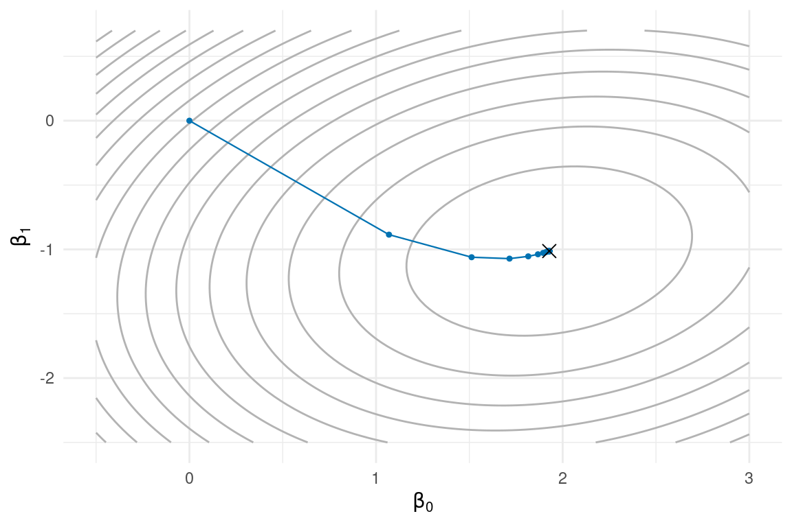
Python
fig, ax = plot_path(mse_loss, path_mse, xlim=(-0.5, 3), ylim=(-2.5, 0.7))
ax.scatter([beta_ols[0]], [beta_ols[1]], marker="x", s=60, color="black")
ax.set_xlabel(r"$\beta_0$")
ax.set_ylabel(r"$\beta_1$")
plt.show()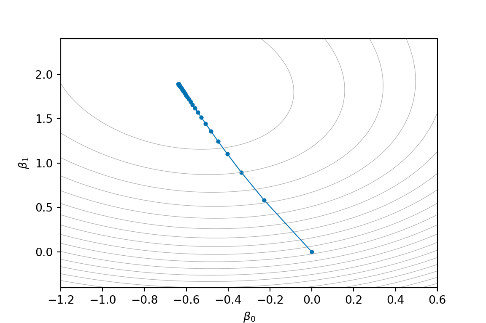
The cross marks \hat{\boldsymbol\beta}_{\text{OLS}}. Gradient descent walks straight to the same place the algebra pointed to. For logistic regression there is no cross to draw in advance: the iterative method is the only game in town. We will fit it in Section 5.7.
5.4 Stochastic gradient descent
Look again at the gradient of the average loss:
\nabla L(\theta) = \frac{1}{n} \sum_{i=1}^{n} \nabla \ell_i(\theta).
Every single step of gradient descent touches all n observations. For our n = 200 toy that is nothing; for n = 10^8 user records it means one step of GD costs a full pass over a dataset that may not even fit in memory. The sum structure suggests a cheeky fix: don’t compute the whole sum. Pick one index I uniformly at random and use \nabla \ell_I(\theta) as a stand-in for \nabla L(\theta). It is a noisy stand-in, but it is unbiased: \mathbb{E}\big[\nabla \ell_I(\theta)\big] = \nabla L(\theta). On average, it is the right direction. The update
\theta_{t+1} = \theta_t - \gamma_t \, \nabla \ell_{I_t}(\theta_t), \qquad I_t \sim \text{Uniform}\{1, \dots, n\},
is stochastic gradient descent (SGD). A compromise between one sample and all n is a mini-batch: average \nabla\ell_i over a random subset B of size m. Still unbiased, with variance shrinking like 1/m, at cost proportional to m. The economics are the whole point:
- one GD step costs O(n) per-observation gradients;
- one SGD step costs O(1) (or O(m) for a mini-batch), regardless of n.
When n is huge, SGD has taken thousands of noisy-but-useful steps before GD finishes its first.
Here is single-sample SGD in the same functional style. One new ingredient: the step size is now a function of the step number t, for reasons one paragraph away.
R
sgd <- function(grad_i, x0, gamma, n_steps, n_data) {
# grad_i(theta, i): gradient of the loss at observation i only
# gamma(t): step size at step t
path <- matrix(NA_real_, nrow = n_steps + 1, ncol = length(x0))
path[1, ] <- x0
for (t in 1:n_steps) {
i <- sample(n_data, 1)
path[t + 1, ] <- path[t, ] - gamma(t) * grad_i(path[t, ], i)
}
out <- as.data.frame(path)
names(out) <- paste0("x", seq_along(x0))
out$iter <- 0:n_steps
out
}
# single-observation gradient for the regression loss
mse_grad_i <- function(b, i) as.vector(-X[i, ] * (y[i] - sum(X[i, ] * b)))Python
def sgd(grad_i, x0, gamma, n_steps, n_data):
# grad_i(theta, i): gradient of the loss at observation i only
# gamma(t): step size at step t
path = np.full((n_steps + 1, len(x0)), np.nan)
path[0] = x0
for t in range(1, n_steps + 1):
i = rng.integers(n_data)
path[t] = path[t - 1] - gamma(t) * grad_i(path[t - 1], i)
out = pd.DataFrame(path, columns=[f"x{j + 1}" for j in range(len(x0))])
out["iter"] = range(n_steps + 1)
return out
# single-observation gradient for the regression loss
mse_grad_i = lambda b, i: -X[i] * (y[i] - X[i] @ b)Note for Python: sample(n_data, 1) draws from \{1, \dots, n\}; rng.integers(n_data) draws from \{0, \dots, n-1\}: each exactly the right range for its language’s indexing. And where R’s sample() quietly uses the global RNG state, the Python column leans on the global rng object in the same way.
Let us run it on the regression loss twice: once with a constant step size, once with a decaying one.
R
set.seed(1)
sgd_const <- sgd(mse_grad_i, c(0, 0), gamma = \(t) 0.1, n_steps = 2000, n_data = n_obs)
sgd_decay <- sgd(mse_grad_i, c(0, 0), gamma = \(t) 2 / (20 + t), n_steps = 2000, n_data = n_obs)
sgd_const$schedule <- "constant: gamma_t = 0.1"
sgd_decay$schedule <- "decaying: gamma_t = 2/(20 + t)"
sgd_both <- rbind(sgd_const, sgd_decay)
ols_pt <- data.frame(x1 = beta_ols[1], x2 = beta_ols[2])
ggplot(contour_data(mse_loss, c(-0.5, 3), c(-2.5, 0.7)), aes(x1, x2)) +
geom_contour(aes(z = f), bins = 20, colour = "grey70") +
geom_path(data = sgd_both, colour = "#009E73", linewidth = 0.4) +
geom_point(data = ols_pt, shape = 4, size = 3, colour = "black") +
facet_wrap(~ schedule) +
labs(x = expression(beta[0]), y = expression(beta[1])) +
theme_minimal()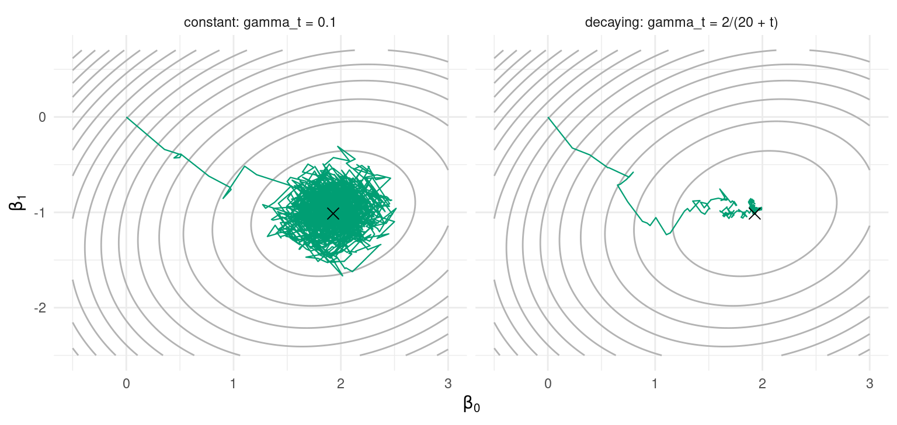
Python
rng = np.random.default_rng(1)
sgd_const = sgd(mse_grad_i, np.array([0.0, 0.0]), gamma=lambda t: 0.1, n_steps=2000, n_data=n_obs)
sgd_decay = sgd(mse_grad_i, np.array([0.0, 0.0]), gamma=lambda t: 2 / (20 + t), n_steps=2000, n_data=n_obs)
# one subplot per schedule, same contours in each
titles = ["constant: gamma_t = 0.1", "decaying: gamma_t = 2/(20 + t)"]
x1, x2, f_grid = contour_data(mse_loss, (-0.5, 3), (-2.5, 0.7))
fig, axes = plt.subplots(1, 2, figsize=(8, 3.8), sharey=True)
for ax, p, ttl in zip(axes, [sgd_const, sgd_decay], titles):
ax.contour(x1, x2, f_grid, levels=20, colors="0.7", linewidths=0.5)
ax.plot(p["x1"], p["x2"], color="#009E73", linewidth=0.8)
ax.scatter([beta_ols[0]], [beta_ols[1]], marker="x", s=60, color="black")
ax.set_title(ttl, fontsize=9)
ax.set_xlabel(r"$\beta_0$")
axes[0].set_ylabel(r"$\beta_1$")
plt.show()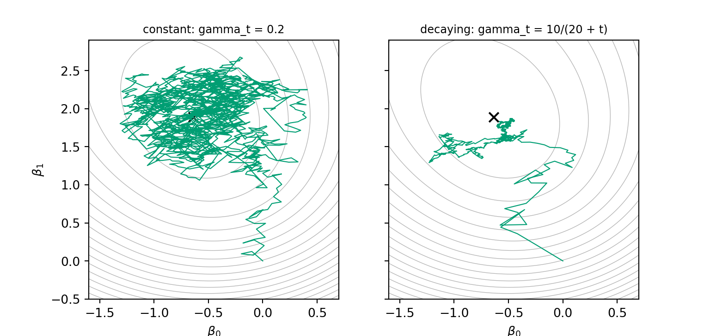
Both trajectories are drunk versions of the gradient descent path: that is the noise of estimating the gradient from one observation. But the endgames differ:
- With a constant step the iterates never settle: they reach the neighbourhood of \hat{\boldsymbol\beta} quickly and then rattle around it forever, in a “noise ball” whose radius grows with \gamma.
- With a decaying step the early iterations still move fast, while the shrinking steps gradually strangle the noise, and the trajectory funnels into the minimum.
How fast should \gamma_t decay? The classical answer (Robbins and Monro, 1951: this algorithm is older than the computer you are running it on) is, informally:
\sum_{t=1}^{\infty} \gamma_t = \infty \qquad \text{and} \qquad \sum_{t=1}^{\infty} \gamma_t^2 < \infty.
The first condition says the steps must add up to infinity: otherwise the algorithm can run out of fuel before reaching the minimum, however far away it started. The second says they must shrink fast enough that the noise averages out. Schedules like \gamma_t = a/(b + t) satisfy both, which is why you keep seeing that shape.
Finally, the claim that actually sells SGD: progress per data point touched. One GD step costs n = 200 observation-gradients; one SGD step costs 1. Plot the loss against that budget:
R
library(dplyr)
sgd_decay$loss <- apply(as.matrix(sgd_decay[, 1:2]), 1, mse_loss)
cost_df <- bind_rows(
tibble(evals = path_mse$iter * n_obs, loss = path_mse$f, method = "GD (full gradient)"),
tibble(evals = sgd_decay$iter, loss = sgd_decay$loss, method = "SGD (one sample)")
) |>
filter(evals > 0)
ggplot(cost_df, aes(evals, loss, colour = method)) +
geom_line(linewidth = 0.7) +
scale_x_log10() +
scale_colour_manual(values = c("GD (full gradient)" = "#0072B2",
"SGD (one sample)" = "#009E73")) +
labs(x = "observation-gradients computed (log scale)", y = "loss L") +
theme_minimal()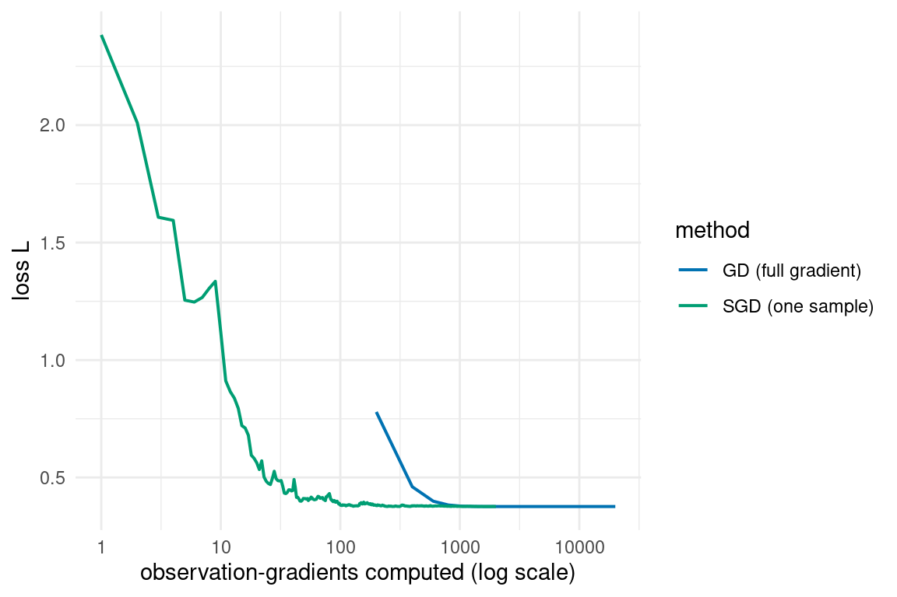
Python
from plotnine import (ggplot, aes, geom_line, scale_x_log10,
scale_colour_manual, labs, theme_minimal)
sgd_decay["loss"] = [mse_loss(b) for b in sgd_decay[["x1", "x2"]].to_numpy()]
cost_df = pd.concat([
pd.DataFrame({"evals": path_mse["iter"] * n_obs, "loss": path_mse["f"],
"method": "GD (full gradient)"}),
pd.DataFrame({"evals": sgd_decay["iter"], "loss": sgd_decay["loss"],
"method": "SGD (one sample)"})
])
cost_df = cost_df[cost_df["evals"] > 0]
(ggplot(cost_df, aes("evals", "loss", colour="method"))
+ geom_line(size=0.7)
+ scale_x_log10()
+ scale_colour_manual(values={"GD (full gradient)": "#0072B2",
"SGD (one sample)": "#009E73"})
+ labs(x="observation-gradients computed (log scale)", y="loss L")
+ theme_minimal()).show()
Note for Python: pandas has no bind_rows() or filter() verbs; pd.concat() plus a boolean mask do the same job (Chapter 4). And plotnine still calls the line-width aesthetic size, which ggplot2 has since renamed linewidth.
By the time GD has finished its first step (200 evaluations), SGD has already collapsed most of the loss. Read the other end honestly too: GD then converges to the exact minimiser, while SGD closes in more slowly and less precisely. For small n and high accuracy, GD (or better, Section 5.7) wins; for enormous n and statistical-scale accuracy (remember the estimate itself has sampling error of order 1/\sqrt{n}, so chasing the tenth decimal of the minimiser is vanity), SGD is the only affordable option. It is the workhorse that trains essentially every neural network.
Exercise 5.2: Mini-batch SGD
Fill in the blanks to turn sgd() into mini-batch SGD, then run it on the regression loss. The batch gradient function is given. Note (on the R side) the drop = FALSE: when the batch holds a single index, X[idx, ] would silently collapse the one-row matrix to a plain vector, and drop = FALSE keeps the matrix shape so the algebra survives batch = 1:
R
mse_grad_batch <- function(b, idx) {
Xb <- X[idx, , drop = FALSE]
as.vector(-t(Xb) %*% (y[idx] - Xb %*% b)) / length(idx)
}
sgd_batch <- function(grad_batch, x0, gamma, n_steps, n_data, batch = 10) {
path <- matrix(NA_real_, nrow = n_steps + 1, ncol = length(x0))
path[1, ] <- x0
for (t in 1:n_steps) {
idx <- sample(____, ____) # draw a mini-batch of indices
path[t + 1, ] <- ____ # the usual update, batch gradient
}
out <- as.data.frame(path)
names(out) <- paste0("x", seq_along(x0))
out$iter <- 0:n_steps
out
}Python
def mse_grad_batch(b, idx):
Xb = X[idx]
return -Xb.T @ (y[idx] - Xb @ b) / len(idx)
def sgd_batch(grad_batch, x0, gamma, n_steps, n_data, batch=10):
path = np.full((n_steps + 1, len(x0)), np.nan)
path[0] = x0
for t in range(1, n_steps + 1):
idx = rng.choice(____, ____, replace=False) # draw a mini-batch of indices
path[t] = ____ # the usual update, batch gradient
out = pd.DataFrame(path, columns=[f"x{j + 1}" for j in range(len(x0))])
out["iter"] = range(n_steps + 1)
return outNote for Python: numpy dodges the drop = FALSE trap: indexing with an index array (X[idx]) always keeps the 2-D shape; only a bare scalar index drops the dimension. The trap on the Python side is rng.choice(), which samples with replacement unless told replace=False, whereas R’s sample() is without replacement by default.
Run 2000 steps with constant gamma = \(t) 0.1 (lambda t: 0.1) for batch sizes 1, 10 and 50, and compare the wobble of the final 500 iterates (e.g. via sd() of each coordinate, .std() in Python, or just by plotting the paths). What does the batch size buy you, and what does it cost?
5.5 Momentum: a ball rolling downhill
Back to the zig-zag valley of Section 5.2. The step size was capped by the steep direction, progress was throttled along the flat one, and the trajectory wasted its energy bouncing between walls. Physics suggests a fix. Imagine the iterate is not a point teleporting around, but a heavy ball rolling on the surface of f, with friction. A ball entering a narrow valley rattles briefly between the walls, the rattling cancels itself out, and the ball settles into rolling along the valley, gathering speed in any direction the slope keeps pushing.
To simulate that, give the iterate a velocity \mathbf{v} that accumulates gradients instead of forgetting them:
\mathbf{v}_{t+1} = \beta\, \mathbf{v}_t - \gamma\, \nabla f(\mathbf{x}_t), \qquad \mathbf{x}_{t+1} = \mathbf{x}_t + \mathbf{v}_{t+1},
with \beta \in [0, 1). This is the heavy-ball method, or gradient descent with momentum. The coefficient \beta is the memory of the ball: each step the old velocity is kept, scaled by \beta, so 1 - \beta acts as friction. \beta = 0 is plain gradient descent (total friction: all velocity lost each step); \beta \to 1 is a frictionless ball that overshoots and oscillates forever. In between, something useful happens:
- in the zig-zag direction the gradient flips sign every step, so successive contributions to \mathbf{v} cancel: the oscillation damps itself;
- in the consistent downhill direction the contributions all point the same way and accumulate: the ball accelerates along the valley floor.
In code, two lines change:
R
grad_descent_mom <- function(f, grad, x0, gamma, n, beta = 0.9) {
path <- matrix(NA_real_, nrow = n + 1, ncol = length(x0))
path[1, ] <- x0
v <- numeric(length(x0)) # start at rest
for (i in 1:n) {
v <- beta * v - gamma * grad(path[i, ])
path[i + 1, ] <- path[i, ] + v
}
out <- as.data.frame(path)
names(out) <- paste0("x", seq_along(x0))
out$f <- apply(path, 1, f)
out$iter <- 0:n
out
}Python
def grad_descent_mom(f, grad, x0, gamma, n, beta=0.9):
path = np.full((n + 1, len(x0)), np.nan)
path[0] = x0
v = np.zeros(len(x0)) # start at rest
for i in range(n):
v = beta * v - gamma * grad(path[i])
path[i + 1] = path[i] + v
out = pd.DataFrame(path, columns=[f"x{j + 1}" for j in range(len(x0))])
out["f"] = [f(row) for row in path]
out["iter"] = range(n + 1)
return outSame valley, same aggressive \gamma = 0.18, with and without momentum:
R
path_plain <- grad_descent(f_ill, grad_ill, c(-9, 1.5), gamma = 0.18, n = 60)
path_mom <- grad_descent_mom(f_ill, grad_ill, c(-9, 1.5), gamma = 0.18, n = 60, beta = 0.5)
both <- bind_rows(mutate(path_plain, method = "gradient descent"),
mutate(path_mom, method = "with momentum"))
ggplot(contour_data(f_ill, c(-10, 3), c(-4, 4)), aes(x1, x2)) +
geom_contour(aes(z = f), bins = 20, colour = "grey70") +
geom_path(data = both, aes(colour = method), linewidth = 0.4) +
geom_point(data = both, aes(colour = method), size = 0.9) +
scale_colour_manual(values = c("gradient descent" = "#0072B2",
"with momentum" = "#D55E00")) +
theme_minimal()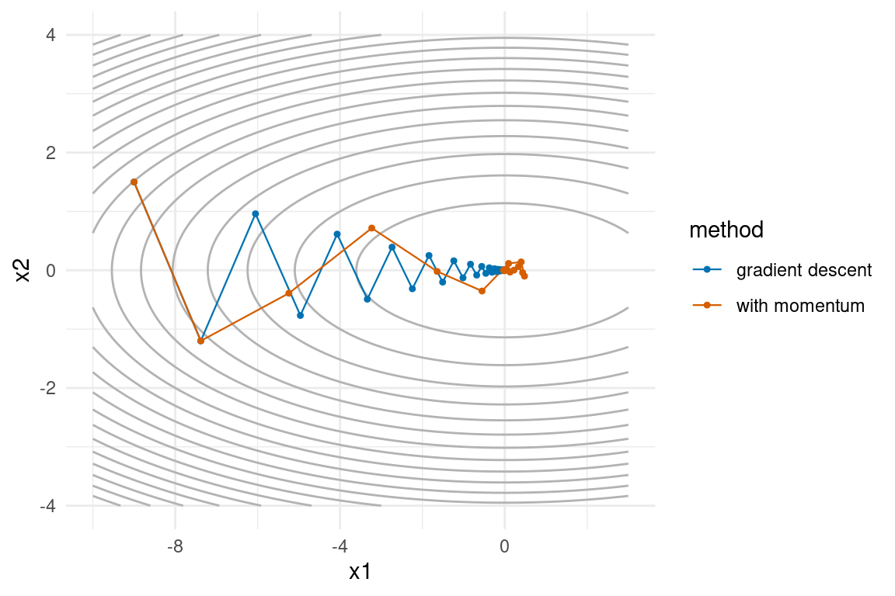
Python
path_plain = grad_descent(f_ill, grad_ill, np.array([-9, 1.5]), gamma=0.18, n=60)
path_mom = grad_descent_mom(f_ill, grad_ill, np.array([-9, 1.5]), gamma=0.18, n=60, beta=0.5)
both = [(path_plain, "#0072B2", "gradient descent"),
(path_mom, "#D55E00", "with momentum")]
x1, x2, f_grid = contour_data(f_ill, (-10, 3), (-4, 4))
fig, ax = plt.subplots()
ax.contour(x1, x2, f_grid, levels=20, colors="0.7", linewidths=0.5)
for p, colour, label in both:
ax.plot(p["x1"], p["x2"], color=colour, linewidth=0.8, label=label)
ax.scatter(p["x1"], p["x2"], color=colour, s=8)
ax.legend()
plt.show()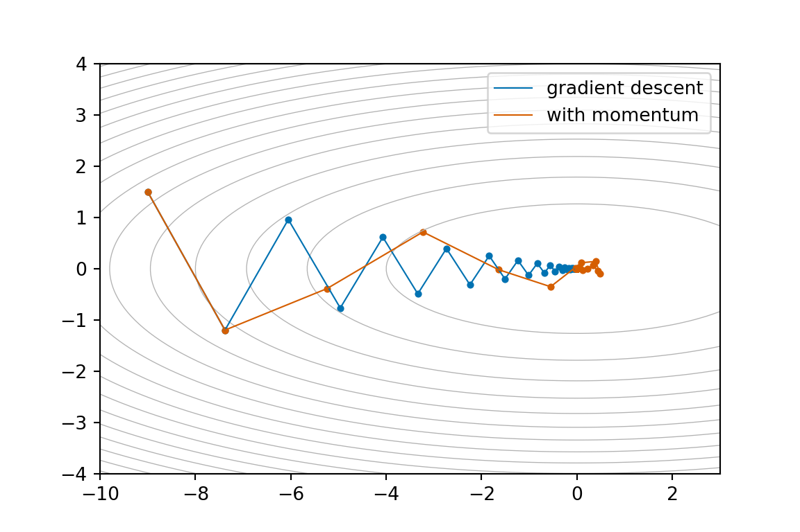
R
c(plain = steps_to_tol(grad_descent(f_ill, grad_ill, c(-9, 1.5), 0.18, 3000), c(0, 0)),
momentum = steps_to_tol(grad_descent_mom(f_ill, grad_ill, c(-9, 1.5), 0.18, 3000, beta = 0.5),
c(0, 0))) plain momentum
46 23 Python
{"plain": steps_to_tol(grad_descent(f_ill, grad_ill, np.array([-9, 1.5]), 0.18, 3000),
np.array([0, 0])),
"momentum": steps_to_tol(grad_descent_mom(f_ill, grad_ill, np.array([-9, 1.5]), 0.18, 3000,
beta=0.5),
np.array([0, 0]))}{'plain': 46, 'momentum': 23}The orange path shakes off the zig-zag within a few bounces and cruises down the valley, reaching tolerance in half the iterations, and the gap widens as \kappa grows. In practice \beta is a tuning knob like \gamma: values around 0.9 are the folklore default in machine learning, but on a nearly-quadratic problem like this a smaller \beta damps faster (try 0.9 here and watch it overshoot the minimum and loop back).
5.5.1 Stochastic momentum
Momentum drops straight into SGD. Replace the full gradient with the single-sample one:
R
sgd_mom <- function(grad_i, x0, gamma, n_steps, n_data, beta = 0.9) {
path <- matrix(NA_real_, nrow = n_steps + 1, ncol = length(x0))
path[1, ] <- x0
v <- numeric(length(x0))
for (t in 1:n_steps) {
i <- sample(n_data, 1)
v <- beta * v - gamma(t) * grad_i(path[t, ], i)
path[t + 1, ] <- path[t, ] + v
}
out <- as.data.frame(path)
names(out) <- paste0("x", seq_along(x0))
out$iter <- 0:n_steps
out
}Python
def sgd_mom(grad_i, x0, gamma, n_steps, n_data, beta=0.9):
path = np.full((n_steps + 1, len(x0)), np.nan)
path[0] = x0
v = np.zeros(len(x0))
for t in range(1, n_steps + 1):
i = rng.integers(n_data)
v = beta * v - gamma(t) * grad_i(path[t - 1], i)
path[t] = path[t - 1] + v
out = pd.DataFrame(path, columns=[f"x{j + 1}" for j in range(len(x0))])
out["iter"] = range(n_steps + 1)
return outNow \mathbf{v} is a running average of noisy gradients, so momentum also acts as a noise filter: individual samples may point sideways, but their average points downhill. One honest subtlety: with memory \beta, the steps effectively add up to \gamma/(1-\beta) worth of gradient (with \beta = 0.9 that is a factor of 10), so shrink \gamma accordingly when you switch momentum on.
R
set.seed(2)
s_plain <- sgd(mse_grad_i, c(0, 0), gamma = \(t) 2 / (20 + t), n_steps = 2000, n_data = n_obs)
set.seed(2)
s_mom <- sgd_mom(mse_grad_i, c(0, 0), gamma = \(t) 0.2 / (20 + t), n_steps = 2000,
n_data = n_obs, beta = 0.9)
both_sgd <- bind_rows(mutate(s_plain, method = "SGD"),
mutate(s_mom, method = "SGD + momentum"))
ggplot(contour_data(mse_loss, c(-0.5, 3), c(-2.5, 0.7)), aes(x1, x2)) +
geom_contour(aes(z = f), bins = 20, colour = "grey70") +
geom_path(data = both_sgd, aes(colour = method), linewidth = 0.4) +
geom_point(data = ols_pt, shape = 4, size = 3, colour = "black") +
scale_colour_manual(values = c("SGD" = "#009E73",
"SGD + momentum" = "#D55E00")) +
labs(x = expression(beta[0]), y = expression(beta[1])) +
theme_minimal()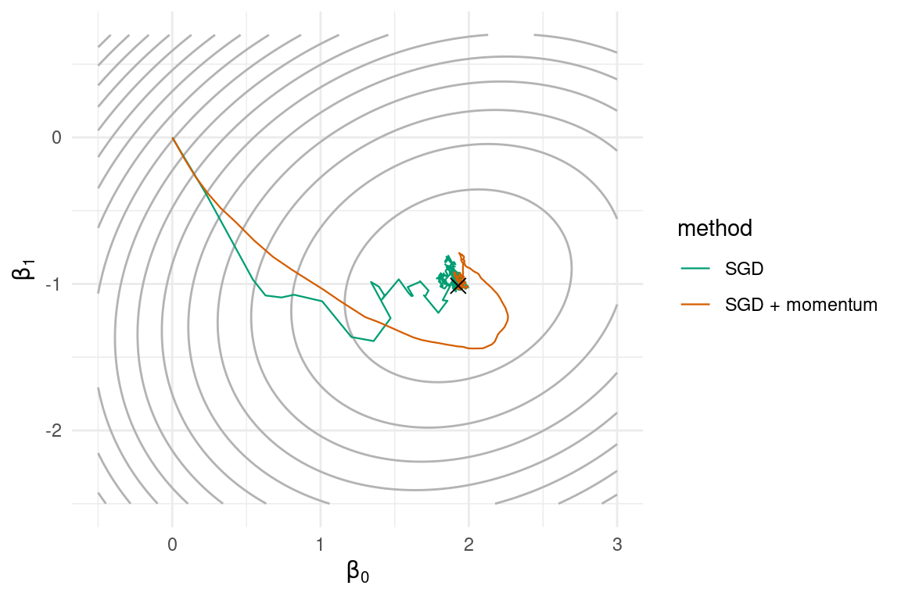
Python
rng = np.random.default_rng(2)
s_plain = sgd(mse_grad_i, np.array([0.0, 0.0]), gamma=lambda t: 2 / (20 + t),
n_steps=2000, n_data=n_obs)
rng = np.random.default_rng(2)
s_mom = sgd_mom(mse_grad_i, np.array([0.0, 0.0]), gamma=lambda t: 0.2 / (20 + t),
n_steps=2000, n_data=n_obs, beta=0.9)
both_sgd = [(s_plain, "#009E73", "SGD"),
(s_mom, "#D55E00", "SGD + momentum")]
x1, x2, f_grid = contour_data(mse_loss, (-0.5, 3), (-2.5, 0.7))
fig, ax = plt.subplots()
ax.contour(x1, x2, f_grid, levels=20, colors="0.7", linewidths=0.5)
for p, colour, label in both_sgd:
ax.plot(p["x1"], p["x2"], color=colour, linewidth=0.8, label=label)
ax.scatter([beta_ols[0]], [beta_ols[1]], marker="x", s=60, color="black")
ax.set_xlabel(r"$\beta_0$")
ax.set_ylabel(r"$\beta_1$")
ax.legend()
plt.show()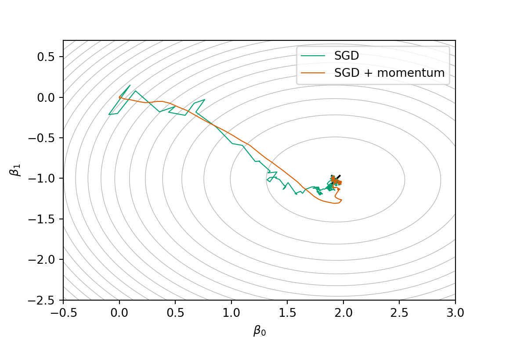
Both end up at the same place, but the momentum path is visibly smoother: it turns gently where plain SGD staggers. SGD-plus-momentum, with mini-batches, is more or less the algorithm that trains deep neural networks.
Exercise 5.3: Momentum pays off
Take Exercise 5.1’s valley, f(x_1, x_2) = x_1^2/2 + 25 x_2^2/2 with \nabla f = (x_1,\, 25 x_2), start (-8, 2), and fix \gamma = 0.07.
- Run
grad_descent()andgrad_descent_mom()withbeta = 0.6(usen = 20000) and reportsteps_to_tol()to within 10^{-3} of the minimum for each. - Plot the two trajectories on the contours of f (adapting the momentum-comparison code above). Where in the picture is momentum earning its keep?
5.6 Preconditioning: fixing the geometry
Momentum treats the symptom of ill-conditioning. Preconditioning treats the cause: the coordinates live on the wrong scales. If the valley is ten times steeper in x_2 than in x_1, then take steps ten times smaller in x_2. Formally, pick a symmetric positive-definite matrix P and update
\mathbf{x}_{t+1} = \mathbf{x}_t - \gamma \, P \, \nabla f(\mathbf{x}_t).
P reshapes the descent direction, stretching it in flat directions and shrinking it in steep ones. Plain gradient descent is P = I.
R
grad_descent_pre <- function(f, grad, x0, gamma, n, P) {
path <- matrix(NA_real_, nrow = n + 1, ncol = length(x0))
path[1, ] <- x0
for (i in 1:n) {
path[i + 1, ] <- path[i, ] - gamma * as.vector(P %*% grad(path[i, ]))
}
out <- as.data.frame(path)
names(out) <- paste0("x", seq_along(x0))
out$f <- apply(path, 1, f)
out$iter <- 0:n
out
}Python
def grad_descent_pre(f, grad, x0, gamma, n, P):
path = np.full((n + 1, len(x0)), np.nan)
path[0] = x0
for i in range(n):
path[i + 1] = path[i] - gamma * (P @ grad(path[i]))
out = pd.DataFrame(path, columns=[f"x{j + 1}" for j in range(len(x0))])
out["f"] = [f(row) for row in path]
out["iter"] = range(n + 1)
return outWhat is the ideal P? Our valley has Hessian (matrix of second derivatives) H = \mathrm{diag}(1, 10): curvature 1 along x_1, 10 along x_2. Choosing P = H^{-1} = \mathrm{diag}(1, 1/10) divides each direction by its own curvature, so every direction behaves like curvature 1: the valley becomes a perfectly round bowl, \kappa = 1. With \gamma = 1:
R
P <- diag(c(1, 1 / 10))
path_pre <- grad_descent_pre(f_ill, grad_ill, c(-9, 1.5), gamma = 1, n = 5, P = P)
round(path_pre, 10) x1 x2 f iter
1 -9 1.5 51.75 0
2 0 0.0 0.00 1
3 0 0.0 0.00 2
4 0 0.0 0.00 3
5 0 0.0 0.00 4
6 0 0.0 0.00 5Python
P = np.diag([1, 1 / 10])
path_pre = grad_descent_pre(f_ill, grad_ill, np.array([-9, 1.5]), gamma=1, n=5, P=P)
path_pre.round(10) x1 x2 f iter
0 -9.0 1.5 51.75 0
1 0.0 0.0 0.00 1
2 0.0 0.0 0.00 2
3 0.0 0.0 0.00 3
4 0.0 0.0 0.00 4
5 0.0 0.0 0.00 5One step. Not “converges quickly”: lands exactly on the minimum in one step.
R
both_pre <- bind_rows(mutate(path_zig, method = "GD, gamma = 0.18"),
mutate(path_pre, method = "preconditioned, gamma = 1"))
ggplot(contour_data(f_ill, c(-10, 3), c(-4, 4)), aes(x1, x2)) +
geom_contour(aes(z = f), bins = 20, colour = "grey70") +
geom_path(data = both_pre, aes(colour = method), linewidth = 0.4) +
geom_point(data = both_pre, aes(colour = method), size = 0.9) +
scale_colour_manual(values = c("GD, gamma = 0.18" = "#0072B2",
"preconditioned, gamma = 1" = "#009E73")) +
theme_minimal()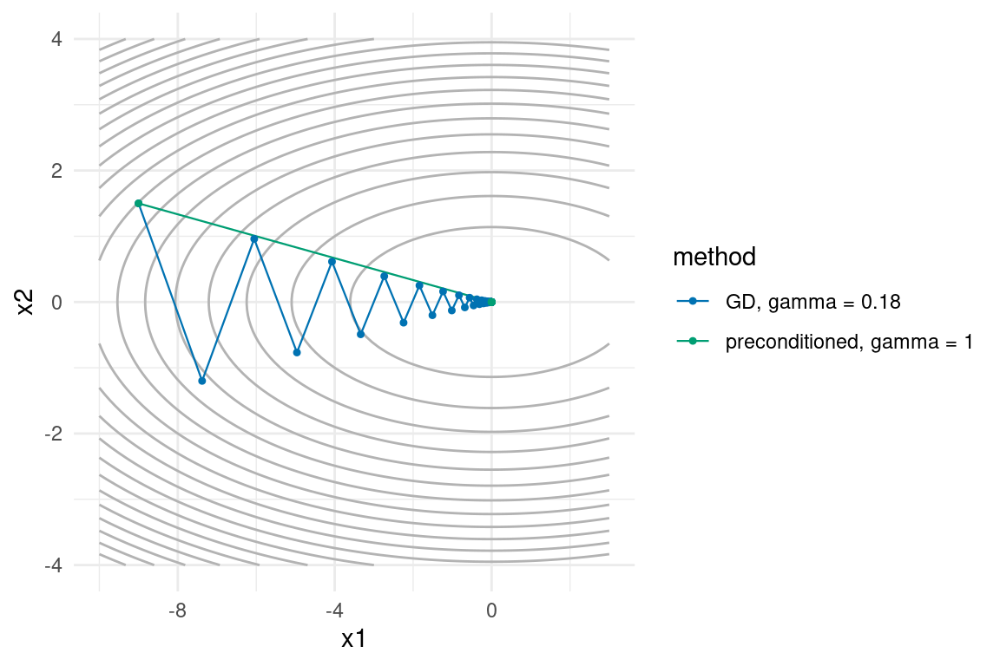
Python
both_pre = [(path_zig, "#0072B2", "GD, gamma = 0.18"),
(path_pre, "#009E73", "preconditioned, gamma = 1")]
x1, x2, f_grid = contour_data(f_ill, (-10, 3), (-4, 4))
fig, ax = plt.subplots()
ax.contour(x1, x2, f_grid, levels=20, colors="0.7", linewidths=0.5)
for p, colour, label in both_pre:
ax.plot(p["x1"], p["x2"], color=colour, linewidth=0.8, label=label)
ax.scatter(p["x1"], p["x2"], color=colour, s=8)
ax.legend()
plt.show()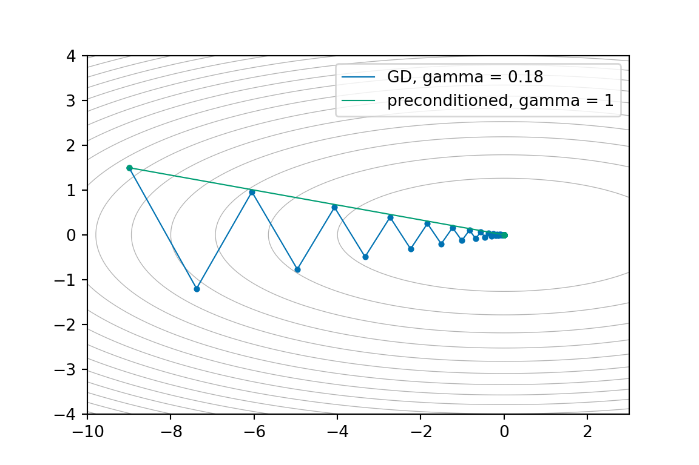
Taking P = (\nabla^2 f)^{-1}, recomputed at every iterate, with \gamma = 1, has a name: Newton’s method. On a quadratic it finishes in one step; near the minimum of a smooth function it converges quadratically (the number of correct digits roughly doubles per iteration). So why isn’t Newton the end of the chapter?
- Cost. In d dimensions the Hessian has d^2 entries, and applying its inverse means solving a d \times d linear system: O(d^3) per step. For a neural network with d = 10^6 parameters, the Hessian alone would need terabytes of memory.
- Fragility. Away from the minimum the Hessian need not be positive definite, and then -H^{-1}\nabla f may not even point downhill. Making Newton robust takes real engineering.
Cheap compromises are everywhere in statistics and machine learning: use only the diagonal of the Hessian (exactly our P above: for axis-aligned problems it is the whole story, and in general it is a decent approximation); or simply standardise your covariates, which is preconditioning by a diagonal matrix before the algorithm even starts. If you remember one practical trick from this section: rescale your variables before optimising. Exercise 5.4 shows what happens if you don’t.
5.7 BFGS: learning the Hessian as you go
Newton’s method needs second derivatives we cannot afford. But here is the clever observation: the gradients we are already computing contain second-order information. By Taylor expansion, for nearby iterates,
\nabla f(\mathbf{x}_{k+1}) - \nabla f(\mathbf{x}_k) \;\approx\; H \, (\mathbf{x}_{k+1} - \mathbf{x}_k),
so each step tells us how the gradient changed when we moved in one particular direction: one slice of the Hessian, for free. Quasi-Newton methods maintain a running approximation B_k \approx H^{-1} and require it to explain the most recent step exactly, the secant condition:
B_{k+1} \, \underbrace{\big(\nabla f_{k+1} - \nabla f_k\big)}_{\mathbf{y}_k} = \underbrace{\mathbf{x}_{k+1} - \mathbf{x}_k}_{\mathbf{s}_k}.
BFGS (Broyden–Fletcher–Goldfarb–Shanno, 1970: four people found it independently in the same year) updates B_k by the smallest symmetric modification that satisfies the secant condition, a rank-two update: cheap matrix–vector algebra, no matrix inversion, and B_k stays positive definite so the step -B_k \nabla f_k always points downhill (provided each step actually observes positive curvature, \mathbf{y}_k^\top \mathbf{s}_k > 0: the line search inside optim() and minimize() sees to this). For the curious, the update is
B_{k+1} = \big(I - \rho_k \mathbf{s}_k \mathbf{y}_k^\top\big) B_k \big(I - \rho_k \mathbf{y}_k \mathbf{s}_k^\top\big) + \rho_k \mathbf{s}_k \mathbf{s}_k^\top, \qquad \rho_k = \frac{1}{\mathbf{y}_k^\top \mathbf{s}_k},
and we will not derive it. The point to retain is the idea: start with B_0 = I (plain gradient descent), and let each observed gradient difference teach the algorithm a bit more of the local geometry. After a handful of steps BFGS is taking nearly Newton-quality steps while having only ever evaluated f and \nabla f.
You will never implement BFGS yourself, because both languages ship it (R as optim(), Python inside scipy.optimize.minimize()):
R
optim(par, fn, gr, method = "BFGS")Python
sp.optimize.minimize(fun, x0, jac=grad, method="BFGS")with par/x0 the starting point, fn/fun the function to minimise and gr/jac its gradient: the same ingredients our grad_descent() takes (this is why we wrote everything functional-style: the interfaces match). Time to fit the logistic regression from Section 5.3, which has been waiting patiently for a competent optimiser:
R
fit_bfgs <- optim(par = c(0, 0, 0), fn = nll, gr = nll_grad, method = "BFGS")
fit_bfgs$par # estimated coefficients[1] -0.6297309 1.8857218 -0.7518765fit_bfgs$value # NLL at the minimum[1] 0.4351439fit_bfgs$counts # evaluations of fn and grfunction gradient
16 14 fit_bfgs$convergence # 0 means success[1] 0Python
import scipy as sp
fit_bfgs = sp.optimize.minimize(nll, x0=np.zeros(3), jac=nll_grad, method="BFGS")
fit_bfgs.x # estimated coefficientsarray([-0.65023601, 2.19990765, -0.92668044])fit_bfgs.fun # NLL at the minimumnp.float64(0.4012675392057255)(fit_bfgs.nfev, fit_bfgs.njev) # evaluations of fn and gr(12, 12)fit_bfgs.success # True means successTrueNote for Python: the report fields differ in name and convention: $par, $value, $counts and $convergence become .x, .fun, .nfev/.njev and .success. And R signals success with convergence == 0, scipy with success == True. Always check it, whatever it is called.
About fifteen gradient evaluations in the R run (a dozen in the Python run, on its own draw of the data). Let us line it up against our own algorithms, and against a reference fit: glm(), R’s official logistic regression fitter, on the left; on the right, since Python has no built-in glm() (the usual tools live in the statsmodels package), BFGS rerun with a very strict tolerance, measuring cost in observation-gradients touched, as in Section 5.4:
R
# our GD, with a hand-tuned step size
path_nll <- grad_descent(nll, nll_grad, x0 = c(0, 0, 0), gamma = 2, n = 200)
# our SGD, with a hand-tuned decay schedule
nll_grad_i <- function(b, i) X_log[i, ] * (sigmoid(sum(X_log[i, ] * b)) - y_log[i])
set.seed(3)
path_sgd_nll <- sgd(nll_grad_i, c(0, 0, 0), gamma = \(t) 10 / (20 + t),
n_steps = 4000, n_data = n_log)
# the reference fit
fit_glm <- glm(y_log ~ X_log - 1, family = binomial)
results <- data.frame(
method = c("glm()", "optim BFGS", "GD (200 steps)", "SGD (4000 steps)"),
nll = c(nll(coef(fit_glm)), fit_bfgs$value,
tail(path_nll$f, 1),
nll(unlist(tail(path_sgd_nll, 1)[1:3]))),
obs_gradients = c(NA, fit_bfgs$counts["gradient"] * n_log, 200 * n_log, 4000)
)
results$nll <- round(results$nll, 6)
results$obs_gradients <- format(results$obs_gradients, big.mark = ",", scientific = FALSE)
results method nll obs_gradients
1 glm() 0.435144 NA
2 optim BFGS 0.435144 7,000
3 GD (200 steps) 0.435144 100,000
4 SGD (4000 steps) 0.435462 4,000Python
# our GD, with a hand-tuned step size
path_nll = grad_descent(nll, nll_grad, x0=np.zeros(3), gamma=2, n=200)
# our SGD, with a hand-tuned decay schedule
nll_grad_i = lambda b, i: X_log[i] * (sigmoid(X_log[i] @ b) - y_log[i])
rng = np.random.default_rng(3)
path_sgd_nll = sgd(nll_grad_i, np.zeros(3), gamma=lambda t: 10 / (20 + t),
n_steps=4000, n_data=n_log)
# the reference fit (no glm() here: BFGS again, with a very strict tolerance)
fit_ref = sp.optimize.minimize(nll, np.zeros(3), jac=nll_grad, method="BFGS",
options={"gtol": 1e-10})
results = pd.DataFrame({
"method": ["reference (tight BFGS)", "minimize BFGS", "GD (200 steps)", "SGD (4000 steps)"],
"nll": [fit_ref.fun, fit_bfgs.fun,
path_nll["f"].iloc[-1],
nll(path_sgd_nll.iloc[-1, :3].to_numpy())],
"obs_gradients": [np.nan, fit_bfgs.njev * n_log, 200 * n_log, 4000]
})
results["nll"] = results["nll"].round(6)
results["obs_gradients"] = ["NA" if np.isnan(v) else f"{v:,.0f}"
for v in results["obs_gradients"]]
results method nll obs_gradients
0 reference (tight BFGS) 0.401268 NA
1 minimize BFGS 0.401268 6,000
2 GD (200 steps) 0.401268 100,000
3 SGD (4000 steps) 0.402468 4,000Read the table slowly: it summarises the whole chapter. (The two columns fit two different draws of the data, so the loss values differ between languages: the pattern is the same.)
- BFGS matches the reference fit (
glm()in R) to six decimals at the cost of a few thousand observation-gradients, with no tuning at all: no \gamma, no schedule, no \beta. The curvature information it accumulates replaces all the knobs we spent this chapter turning by hand. - GD gets there too, but only after we hand-tuned \gamma, and at over ten times the cost. On an ill-conditioned problem (Exercise 5.4) the gap becomes a chasm.
- SGD is nearly as accurate here at a fraction of the cost, and its cost would be unchanged if n were 10^8, which is the regime it is built for.
Two closing remarks on optim() and minimize(). For problems with many parameters there is method = "L-BFGS-B" (same name in both), a low-memory variant that stores only the last few (\mathbf{s}_k, \mathbf{y}_k) pairs instead of the full d \times d matrix (and accepts box constraints on the parameters). And practically: optim() with BFGS is what you reach for when fitting a model by maximum likelihood in R (minimize() in Python): countless packages are, under the hood, exactly optim(par, nll, gr, method = "BFGS") wearing a nice interface.
Exercise 5.4: optim in the wild
Fit a logistic regression predicting a car’s transmission type from its horsepower and weight, using the built-in mtcars data (am is 1 for manual; in Python the same data frame ships with plotnine):
R
X_cars <- cbind(1, mtcars$hp, mtcars$wt)
y_cars <- mtcars$am
n_cars <- nrow(mtcars)
nll_cars <- \(b) {
eta <- as.vector(X_cars %*% b)
mean(log(1 + exp(eta)) - y_cars * eta)
}
nll_cars_grad <- \(b) {
p <- 1 / (1 + exp(-as.vector(X_cars %*% b)))
as.vector(t(X_cars) %*% (p - y_cars)) / n_cars
}Python
from plotnine.data import mtcars
X_cars = np.column_stack([np.ones(len(mtcars)), mtcars["hp"], mtcars["wt"]])
y_cars = mtcars["am"].to_numpy()
n_cars = len(mtcars)
def nll_cars(b):
eta = X_cars @ b
return np.mean(np.log(1 + np.exp(eta)) - y_cars * eta)
def nll_cars_grad(b):
p = 1 / (1 + np.exp(-(X_cars @ b)))
return X_cars.T @ (p - y_cars) / n_cars- Fit with
optim(c(0, 0, 0), nll_cars, nll_cars_grad, method = "BFGS")and compare the NLL at the optimum withglm(am ~ hp + wt, data = mtcars, family = binomial)(computenll_cars(coef(...))). Check$convergence: if it is not0, look up what that means in?optimand fix it via thecontrolargument. - Now try your own
grad_descent()withgamma = 1e-3, then withgamma = 1e-4andn = 20000. Describe what happens in each case. - Explain (b) in one or two sentences using Section 5.2.1. Hint: look at the scales of the columns of
X_cars. Which section of this chapter offers a fix that would let gradient descent compete?
Note for Python: the fit in (a) is sp.optimize.minimize(nll_cars, np.zeros(3), jac=nll_cars_grad, method="BFGS"); the fields to check are .success and .message, and options such as iteration caps go in options = {"maxiter": 500}. With no glm() in Python, compare against a strict-tolerance refit (options = {"gtol": 1e-10}), as the reference row of the table above did.
5.8 Where you will see all this again
This chapter is a gateway. The same handful of ideas reappears, barely disguised, all over statistics and machine learning:
- Maximum likelihood, everywhere. Almost every model you will fit from now on is fitted by numerically minimising a negative log-likelihood. Sometimes the optimiser is visible (
optim()orminimize()in a package’s source code), sometimes hidden (R’sglm()uses iteratively reweighted least squares, a Newton variant), but it is always there, and now you know what its knobs mean and what its failure modes look like. When a model “fails to converge”, you have seen the picture: a too-large step diverging, or an ill-conditioned likelihood crawling. - Neural networks. Training a network is minimising an average loss over millions of observations and millions of parameters: mini-batch SGD with momentum is the core engine, and the popular Adam optimiser is momentum plus an adaptive diagonal preconditioner estimated on the fly. You have now implemented the essential parts of it in a few dozen lines of code.
- Sampling algorithms. When you meet Markov chain Monte Carlo in weeks 8–10 of this module, you will find the same geometry problem in a new costume: a sampler exploring an elongated, ill-conditioned posterior zig-zags just like gradient descent did, and the fix is again preconditioning (there it goes by names like “mass matrix” or “proposal covariance”). The valley picture from this chapter is worth keeping.
The tools were weeks 1–4: vectors and matrices to hold the data, loops to iterate, functions to make the algorithms reusable, and plots to see what is really going on. The ideas were this week’s. Together they are most of computational statistics.